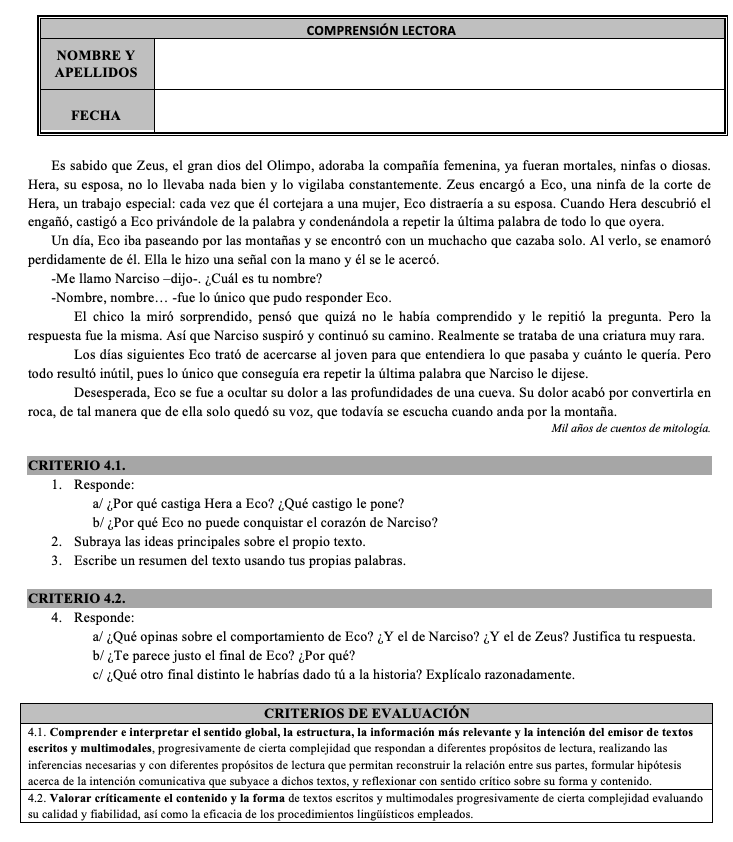

Lo primero es aclarar que por cuestionario o prueba escrita no me refiero a un examen en exclusiva, si no también a ejercicios de clase, a tareas, etc. O sea, es un concepto muy amplio.
Hay que tener en cuenta que aunque trabajemos de forma integrada muchos aprendizajes, la evaluación de los criterios debe ser diferenciada. Por ejemplo, es habitual trabajar en el aula al mismo tiempo cuestiones como la expresión escrita, gramática, ortografía, etc., pues sus aprendizajes no son independientes; al contrario: están muy relacionados unos con otros.
Pues bien, aunque esto es una realidad, a la hora de la calificación debemos hacerla de forma diferenciada, criterio por criterio. Es decir, unas actividades concretas para el criterio 3.1., otras diferentes para el 3.2., otras para el 3.3. y así sucesivamente. Lógicamente, todas las actividades de un criterio sumarán diez puntos, para medir el aprendizaje del alumno / a en la escala tradicional de 1 a 10.
¿Y es posible usar una sola actividad para evaluar dos o más criterios diferentes? Sí, sin problema, pero calificando la actividad desde las diferentes ópticas de los distintos criterios. Por ejemplo, si en Inglés quiero calificar un criterio relacionado con la expresión escrita y otro distinto vinculado al uso de vocabulario de un tema concreto, puedo hacerlo mandando la redacción de un solo texto y, a continuación, evalúo cómo lo ha redactado (primer criterio) -valorándolo de uno a diez- y luego si ha usado o no el vocabulario que pedía -valorándolo de uno a diez-. Dos calificaciones diferentes porque estoy evaluando dos criterios diferentes, aunque el ejercicio del alumno / a sea exactamente el mismo.
Para aclarar cómo se debe diseñar una prueba escrita, veamos un ejemplo:

Podemos ver cómo se van a evaluar varios criterios que están relacionados, pero se han separado en bloques las actividades usadas para cada criterio. De esta forma, se está realizando una evaluación diferenciada de los criterios de evaluación. Y, al mismo tiempo, obtendremos información sobre cómo se está desarrollando el aprendizaje de cada criterio de evaluación, algo que reflejaremos en nuestro cuaderno de Séneca.
Fuente: Blog "El loco de la mochila".